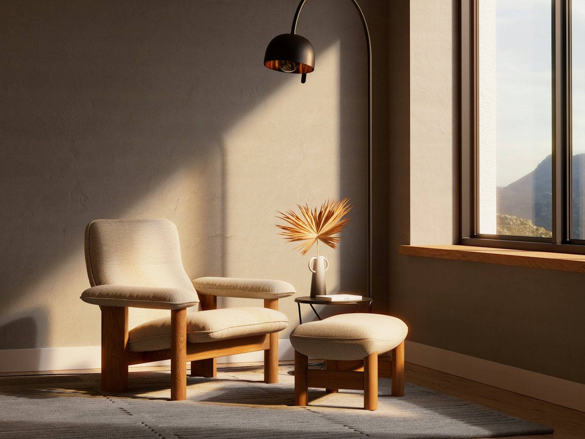

Respirer.
Se poser.
Retrouver sa place.
Des séances pour apaiser le stress, retrouver le sommeil et avancer avec confiance. Une écoute attentive et des exercices simples, que vous emportez avec vous.

Ce qui vous amène, à votre rythme.
La sophrologie s'appuie sur la respiration, la détente du corps et la visualisation. En savoir plus
- 01Réserver
Stress et anxiété
Relâcher les tensions, calmer le mental, retrouver de l'espace au quotidien.
- 02Réserver
Sommeil
Apprendre à se détendre le soir et retrouver des nuits plus sereines.
- 03Réserver
Examens et prise de parole
Se préparer, gérer le trac et aborder le jour J avec confiance.
- 04Réserver
Grossesse et grands changements
Traverser une période de transition en restant à l'écoute de soi.
Quatre façons de commencer.
Au cabinet ou en visio, à l'unité ou en forfait. Voir toutes les séances
Une heure pour vous, en trois temps.
On échange
Ce qui vous amène, ce que vous ressentez, ce que vous aimeriez changer.
On pratique
Respiration, détente du corps, visualisation : guidé, assis ou allongé, sans effort.
Vous repartez outillé
Un exercice court à refaire chez vous, adapté à votre quotidien.